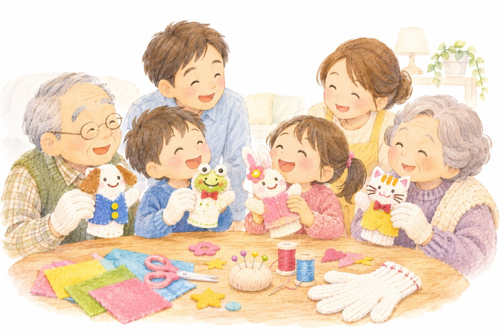

作る時間が、
人と人をつなぐ
人形劇は、親子に共通の体験を、子どもに気持ちを表す手段を、世代の違う人に一緒に何かを作る理由をくれます。そして地域の舞台や、シニアの生きがいにも広がっています。


案内役から、ひとこと公演のあと、子どもとお母さんが人形の話をしながら帰っていく後ろ姿を見るのが、私は大好きです。
親子で観ると、会話が生まれる
同じ部屋にいても、家族がそれぞれ別のことをしている。そんな時間は珍しくありません。人形劇を親子で観ると、共通の話題と気持ちが生まれます。
「ウサギさん、面白かったね」
「オオカミさん、本当は優しかったね」
「あの人形、どうやって動いていたのかな？」
「今度、一緒に作ってみようか」
観て、共感して、家で話して、靴下や軍手で人形を作る。体験がどんどん広がります。富山県魚津市のサークル代表は、子どもと母親が会話しながら観てくれるのがうれしいと話します。子育てに悩む若い母親と活動の合間に話すと、「少し楽になった」と言われるそうです。
恥ずかしがり屋の子も、話せるようになる
人前では話せない子でも、ウサギやクマになりきれば話せることがあります。自分としてではなく人形として話すと、気持ちが軽くなるからです。人形を使った遊び（ドル・プレイ）は、子どもが心の中の葛藤や不満を表すのに向いているとされ、遊戯療法（遊びを通じた心のケア）にも使われてきました。
保育の世界でも、人形劇は長い歴史があります。大正13年ごろから取り入れられ、倉橋惣三らの「お茶の水人形座」が先駆けでした。岐阜市の保育士への調査では、9割以上が「保育において人形を用いた物語提示が必要」と答えています。
物語を考えるには登場人物の気持ちを想像します。気持ちを表す、相手を想像する、話を聞く、協力する。人形劇は、これらを遊びの中で体験できる場です。
世代を超えて、同じ目標を持つ
| 世代 | 活動の例 |
|---|---|
| 小学生 | 登場人物を考える・人形を作る |
| 中学生・高校生 | 人形操作・演技 |
| 大学生 | 脚本・演出・音楽 |
| 20〜40代 | 企画・舞台制作・広報 |
| 50〜60代 | 技術指導・制作・演技 |
| 70代以上 | 語り・裁縫・昔話の伝承・人形操作 |
富山県滑川市のサークルは「人形劇は世代を超えたふれ合い」と掲げ、子どもたちが上演を手伝うこともあります。その劇を観た子が、のちに部活で演劇を始めた例もあります。ふだん、小学生と70代が同じ目標を持って何度も顔を合わせる機会は多くありません。人形劇は、その場を自然に作ります。
アマチュアだからできること
プロの劇団は、高い完成度の作品を届けます。京都の「人形劇団京芸」は、全国の学校や保育園などで年間300ステージを超える公演をしています。アマチュアの役割は、それとは別です。
| プロ | アマチュア | |
|---|---|---|
| 活動の基盤 | 職業・芸術活動 | 趣味・市民活動・ボランティア |
| 参加者 | 専門技術のある人が中心 | 一般の市民が参加できる |
| 活動範囲 | 地域・全国・海外 | 地域に密着しやすい |
| 成果 | 優れた作品を届ける | 作品に加え、作る過程も価値になる |
両者は支え合う関係です。魚津市のサークルは、プロの劇団を招いたことが自分たちのレベルアップにつながったと話します。
地域がまるごと舞台になる「いいだ人形劇フェスタ」
長野県飯田市で毎年開かれる人形劇の祭典です。1979年の「人形劇カーニバル飯田」から始まり、2026年で通算48回になります。
- 観る人・演じる人・支える人の全員が参加費を出し合い、「参加証ワッペン」をつけて参加します。公演の8〜9割は、ワッペンだけで観られます。
- 市内20地区の公民館や小学校、保育園などで開く「地区公演」は、各地区の実行委員会が企画・運営します。
- 2024年は281劇団が参加し、109会場で378回の公演がありました。観劇者は延べ26,575人です。
2026年のテーマは「みる 演じる ささえる わたしがつくる」。アマチュア人形劇の姿そのものです。小さな町にも同じ流れがあり、東京都東大和市では入場無料の「人形村」が2026年に第31回を迎えました。
近所づきあいと、シニアの生きがいに
内閣府の令和7年の調査では、孤独感が「ある」人は約4割、同居していない家族や友人と直接会って話すことが「全くない」人は1割程度でした。「地域で交流しましょう」と呼びかけるだけでは、続きません。人形劇には、作る・練習する・公演するという目的があるので、初対面でも話す理由が生まれます。
「この人形はどうやって作りますか？」
「ここの台詞を変えてみませんか？」
「来週の公演、頑張りましょう」
令和8年版高齢社会白書では、趣味や地域行事などの社会活動に参加した65歳以上のうち、生きがいを感じている人は84.6%。参加しなかった人を23.0ポイント上回りました。大工の経験は舞台装置に、裁縫は衣装に、管理職の経験は劇団の運営に、子育ての経験は子どもへの語りかけに生きます。支えられる側から、子どもたちに喜びを届ける側へ。人形劇はそんな場でもあります。
「やってみたいかも」と思ったら、始め方のページへ。最初の一歩は、思ったより小さいです。
始め方のページへ →